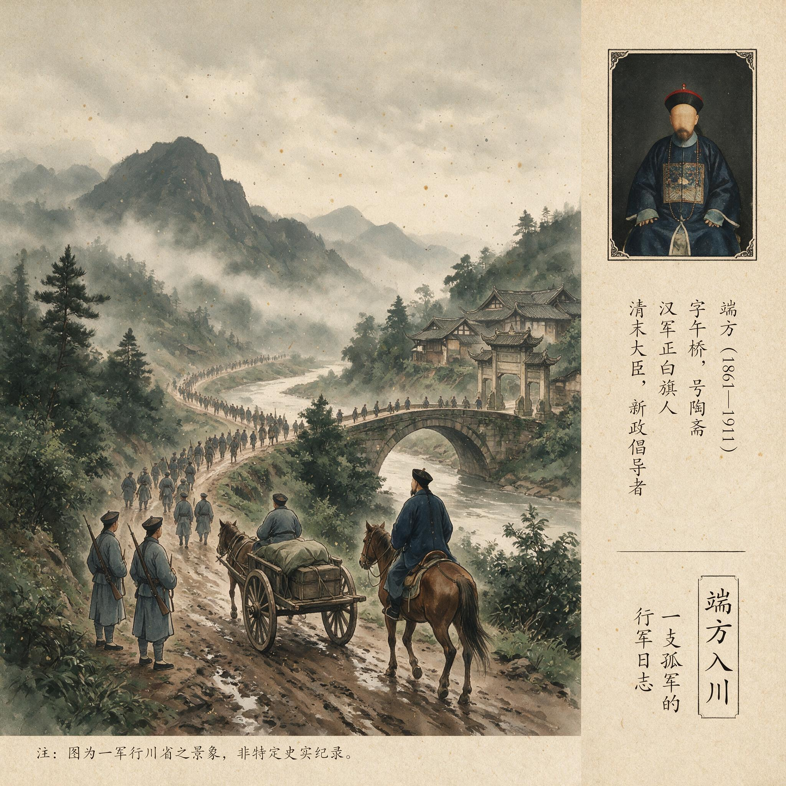

第 14 章
端方入川：一支孤军的行军日志
端方在重庆道台衙门签押房里来回踱步时，桌上的电稿已经改了三遍。十月的川东尚未转凉，他额上渗着细汗，手里的帕子已经湿透。幕僚杨守敬站在一旁，看着这位以“开通”著称的满洲权贵将第四稿又

端方（Duanfang）肖像照片
AI 生成插图，非史实影像。
揉成一团，扔进了字纸篓。
“再拟。”端方只说了两个字。杨守敬没有立刻提笔。他知道这道奏折的分量——钦差大臣端方向朝廷建议，对四川保路运动的处置，应从武力镇压转为招抚，并释放已被赵尔丰逮捕的蒲殿俊等九人。这个建议，与端方一个多月前离开武昌时的立场，已经完全不同。
那时他是带着兵来的。1911年9月15日，端方从武昌启程。随身携带的物品中，有一本靛蓝色布面的行军日记本。封面上有他亲笔题写的“入川日记”四个字。第一页记录的是出发当日的天气和随行人员名单。字迹工整，墨色饱满，看得出是从容不迫的心境下写就的。那一天武昌文昌门外码头上，湖北新军第八镇第十六协第三十一标、第三十二标的官兵约两千人列队登船。军旗猎猎，铜号嘹亮。湖广总督瑞澂亲率文武官员送行，场面颇为壮观。
端方站在招商局“江宽”号轮船的甲板上，向送行者拱手致意。他身后站着协统邓承拔、标统曾广大等将官，人人军容整肃。这支队伍是瑞澂从湖北新军中“遴选”出来的精锐。按照清廷9月9日的谕令，端方以督办粤汉、川汉铁路大臣的身份，“迅速赴川”，湖广总督负责“遴选得力部队”交其统带。被选中的第三十一标和第三十二标，是湖北新军第八镇的主力，装备有德国造毛瑟步枪，训练有素。在当时的中国，湖北新军被视为仅次于北洋军的第二支现代化武装力量。端方的日记里，这一天只记了寥寥数行：“辰刻启程，瑞莘帅率僚属送于文昌门外。天气晴和，江流平稳。同行者邓协统承拔、曾标统广大，共带步队两标，炮兵一队，约二千人。”
从武昌到宜昌，水路六百余里，乘轮船顺流而下再溯江而上，正常只需四五日。但这支船队走得并不快。端方的日记显示，他们在途中多次停靠——岳州、沙市、荆州，每到一处，端方都要发电报与沿途地方官协调粮草供应，同时接收北京和成都发来的最新消息。
9月19日，船抵宜昌。端方在这里停留了三天。宜昌是川汉铁路的起点。1909年底，川汉铁路公司在宜昌正式动工，到1911年时，实际完成的线路仍十分有限。端方作为督办铁路大臣，对这段工程的情况是了解的。他在日记中写道：“往勘宜夔段工程，已成者仅三十余里，余皆停顿。路款支绌，材料缺乏，洋工程师多已离去。”
这是川汉铁路的真实状况——集股数年，耗资巨大，工程进展却远不理想。后来又有资金投入上海金融市场，在1910年前后的橡胶股票投机和相关钱庄倒闭中发生亏损。这一问题不仅影响公司财务，也使1911年清廷要求查账、收路时的股款处置成为成都路绅与中央政府冲突的核心问题之一。但端方此时的心思不在铁路上。
他在宜昌接到了赵尔丰的电报，得知成都局势正在急剧恶化。9月7日“成都血案”之后，同志军起义已遍及川西各州县，成都城被围困。赵尔丰在电报中语气急迫，催促端方“兼程前进”。
端方没有立即启程。他在宜昌做的事情，是重新编组队伍。从宜昌往西，长江进入三峡段，轮船无法通行，只能换乘木船或走陆路。两千人的队伍，加上辎重、火炮、弹药，需要大量船只和民夫。宜昌知府调集了上百条木船，但仍不够用。端方只得将队伍分成数批，分批西进。
他的日记在9月22日这天出现了一个值得注意的变化。此前工整的楷书，从这一页开始变得潦草起来。字迹有些急促，墨色也深浅不一。他写道：“宜昌以上，江狭滩多，舟行甚险。士卒多不习水性，呕吐狼藉。有数人坠水，幸救起。”
那是那支“精锐之师”遭遇的第一道关口。三峡之险，自古有名。两岸峭壁如削，江流湍急，暗礁密布。湖北新军的士兵多来自平原地区，从未见过这样的水路。木船在激流中颠簸摇摆，许多人晕船呕吐，完全丧失了战斗力。更严重的是，有几条船在过滩时触礁漏水，虽然人员被救起，但部分弹药受潮报废。
端方在日记中记录了一组数字：从宜昌到夔州，约四百里水路，船队走了整整八天。途中因病减员十七人，因坠水溺毙三人，因船翻失踪两人。另有约三十名士兵在停靠时趁机逃走。“逃逸”这个词，在这本日记中第一次出现。
9月30日，端方抵达夔州。此时距离他从武昌出发，已经过去了半个月。而前方到成都，还有一千多里山路。夔州知府在码头迎接。
端方下船后的第一件事，是向北京和成都分别发电报。给朝廷的电报中，他报告了行军进度，措辞仍保持着钦差大臣的从容。但给赵尔丰的电报，语气就不那么客气了。他质问赵尔丰为何没有在沿途预备足够的粮草和民夫，导致行军受阻。赵尔丰的回电很快来了。
这位四川总督的措辞同样不客气。他说，四川全省已乱，州县自顾不暇，无法为端方部提供充分的后勤保障。他建议端方“就地筹粮”，并提醒说，川东一带的同志军活动也日益频繁，端方部需自行警戒。这封电报让端方大为光火。他在日记中写道：“季和来电，语多推诿。川局糜烂至此，彼不能辞其咎。今援军远来，又不预筹供应，是何居心？”
季和，是赵尔丰的字。端方与赵尔丰的关系，此时已现裂痕。两人同为清廷倚重的封疆大吏——端方曾任两江总督、直隶总督，赵尔丰则是四川总督，都是满洲权贵中的能员。
但两人的政治风格截然不同。端方以“开通”著称，戊戌变法时期曾主张立宪，在督抚任上推行新政，与张之洞、袁世凯并称“新政三杰”。赵尔丰则以“能吏”闻名，手段强硬，在川边平定土司叛乱时杀人无数，人称“赵屠户”。清廷派端方入川，本意是让他协调乃至制衡赵尔丰。但这一安排从一开始就埋下了矛盾的种子。端方是钦差大臣，理论上可以节制四川全省军政，但赵尔丰是四川总督，手握实权，对端方的到来并不欢迎。两人在指挥权、镇压策略上的分歧，随着端方深入四川而日益尖锐。
从夔州往西，端方改走陆路。这是整个行军过程中最艰难的一段。川东鄂西交界处，山高谷深，道路崎岖。所谓的“官道”，不过是山腰间凿出的一条窄径，许多地段仅容一人一马通过。队伍拉得很长，前后往往相距数里。
时值秋雨连绵，山路泥泞湿滑，士兵负重行军，苦不堪言。端方的日记在这段行程中变得格外简略。有时一天只记几个字：“行四十里，宿荒村。”“雨，路滑，坠马者数人。”但有一个数据他记得很仔细——每日的减员人数。10月3日：“逃兵五人，病者十余人。”
10月4日：“夜宿野庙，查点人数，又少七名。”
10月5日：“山路愈险，有士兵失足坠崖，救之不及。”
10月6日：“病者益多，医药俱缺。有湖南籍兵丁数人聚议逃归，被拿获，各责四十棍。”
这些简短的记录，拼凑出一支军队在缓慢瓦解的过程。非战斗减员——疾病和逃亡——正在蚕食这支两千人的队伍。端方日记中关于“山路崎岖，士卒多病，沿途逃逸日有数起”的记录，成为这份行军日志中最触目惊心的内容。
疾病主要来自三个方面。一是水土不服。湖北新军的士兵多来自江汉平原，对川东山区潮湿阴冷的气候极不适应，腹泻、疟疾、伤寒等疾病在军中流行。二是给养恶劣。沿途州县无力提供足够的粮食，士兵常常只能以干粮充饥，营养不良导致体力严重下降。三是医疗缺乏。随军只有几名医官，药品在宜昌登岸时已损失了一部分，到夔州后又因受潮报废了一批，到后来连奎宁这样基本的抗疟药都用光了。
逃亡的原因更为复杂。有些士兵是畏难怕苦，不愿再走下去。有些是对前途感到恐惧——关于四川同志军的传闻在军中流传，说他们人多势众，说他们熟悉地形，说他们已经包围了成都，说入川的清军是去送死。还有些士兵听到了从湖北传来的消息：武昌防务空虚，新军内部不稳，革命党人正在活动。
这些消息像暗流一样在士兵中传播，动摇着军心。端方对逃亡采取了严厉的惩戒措施。日记中多次提到“拿获逃兵，正法示众”的记录。但这种杀一儆百的做法效果有限。当整支军队的士气都在瓦解时，枪毙几个人并不能阻止更多的人逃走。更何况，在山高林密的川东，逃跑的机会太多了。队伍行军时拉得很长，前后难以照应；夜间宿营时分散在多个村落，哨兵也看不住所有人。端方在10月8日的日记中写下了一段罕见的感慨：“行军之难，不在敌强，而在自溃。今士卒离心，虽孙吴复生，亦难为计。”
这份奏折的底稿，后来被杨守敬收入了《端忠敏公奏稿》。端方在奏折中说，四川局势之严重，超出此前估计。同志军并非乌合之众，而是“有组织、有号令、有枪械”的武装力量。他们依托袍哥网络，熟悉地形，深得民心。仅靠军事镇压，难以在短期内平定局势。他建议朝廷“剿抚兼施”，一方面继续军事行动，一方面考虑释放被捕的保路运动领导人蒲殿俊等人，以分化瓦解同志军。这份奏折，标志着端方立场的重大转变。端方与保路运动的关系，从一开始就充满矛盾。他是督办铁路大臣，铁路国有政策正是由他参与制定的。
1911年5月9日，清廷颁布铁路国有政策后，端方是执行这一政策的主要官员之一。在朝廷看来，他是处理四川路事的最合适人选——既熟悉铁路事务，又有督抚经验，且以“开通”著称，或许能说服四川绅商接受国有政策。
但端方本人并非没有疑虑。他在戊戌变法时期曾主张立宪，对民间舆论有一定的理解。他知道四川的保路运动并非简单的民变，而是有绅商阶层广泛参与的政治抗议。那些在成都股东特别大会上慷慨陈词的罗纶、邓孝可，那些在茶馆里向民众演说的读书人，那些罢市罢课、手持光绪牌位请愿的市民——他们不是乱民，而是大清的子民，是立宪运动的支持者。现在，端方受命镇压的，正是这样一场由立宪派绅商主导的抗议运动。
这个矛盾，在端方深入四川后变得愈发尖锐。他在沿途看到的情形，与朝廷邸报上描述的“匪乱”完全不同。同志军并非四处烧杀抢掠的土匪，而是有纪律、有组织的武装。许多地方的团练、保甲甚至暗中支持同志军。端方在日记中写道：“所过州县，民情汹汹，官不能制。问其故，皆曰‘铁路事’。”
“铁路事”——这三个字，让端方明白了一个道理：四川的问题，根源不在军事，而在政治。不解决铁路股权这个核心矛盾，仅靠军队镇压，只会激起更大的反抗。但朝廷并不理解这一点。
端方从万县发出的奏折，在北京引起了不同的反应。摄政王载沣认为端方“畏葸不前”，邮传部尚书盛宣怀也是怒不可遏。盛宣怀是铁路国有政策的主要推动者，也是向四国银行团借款的经办人。在他看来，四川的动乱必须用武力迅速平定，否则将影响朝廷的国际信誉和借款合同的履行。盛宣怀给端方发了一封措辞严厉的电报，要求他“迅速前进，会同赵尔丰克期肃清匪乱”，并警告说“若再迁延，定予严谴”。
这封电报，端方是在忠州收到的。忠州，是川东的一个小州城。端方在这里停留了一天，为的是等待落后的辎重队。他的日记在这一天出现了另一个值得注意的记录：“接京电，盛尚书责以迁延。然军中情形，非身处其间者不能知。今日又逃兵八人，病者三十余。以此疲卒，何堪一战？”
“疲卒”——端方用这个词来形容他麾下的那支“精锐之师”。从宜昌到忠州，行军不过半个多月，两千人的队伍已经减员近两成。其中逃亡者约百人，病号约两百人，加上坠崖、溺毙等意外伤亡，实际能作战的兵力已不足一千七百人。更严重的是，留下来的人也士气低落。军官难以约束士兵，士兵对军官缺乏信任，整支军队处于一种“将不知兵，兵不顾将”的状态。
端方在忠州做了一件事：他向湖广总督瑞澂发电，请求增援。这封电报的底稿，也保存在杨守敬的档案中。端方在电报中说，入川部队“兵力单薄，不敷分布”，请求瑞澂从湖北再派一到两个标的兵力入川协助。
瑞澂的回电让端方失望了。瑞澂说，湖北新军主力已被端方带走，留守武昌的兵力“仅敷城防，无可抽调”。这是一个致命的现实。清廷调湖北新军入川的决定，已经抽空了武昌的防务。湖北新军第八镇共有步兵四个标，其中第三十一标、第三十二标被端方带走，第三十标此前已被调往湖南镇压抢米风潮，留在武昌的只有第二十九标和部分炮兵、工程兵。
这些留守部队中，革命党的势力早已深入渗透。文学社、共进会等革命团体在新军士兵中发展了大量成员，起义的准备工作正在紧锣密鼓地进行。端方对此并非一无所知。他在日记中隐约提到过对湖北局势的担忧：“闻鄂中亦有谣言，新军多不稳。”但他此时被困在川东的山路上，对武昌正在酝酿的风暴，既无法预知其规模，也无力采取任何措施。
10月13日前后，端方抵达重庆。重庆是川东重镇，也是端方入川以来抵达的最大城市。重庆知府和本地绅商在码头迎接，场面比沿途各州县都要隆重。端方下船后，住进了重庆道台衙门。
在这里，端方得到了一个相对完整的信息环境。重庆有电报线路连接成都和北京，端方可以及时收到各方消息。他抵达后的第一件事，就是翻阅积压的电报和邸报。这些电报和邸报，让他对全局有了更清晰的判断。成都方面，赵尔丰仍在与同志军激战。新津战事胶着，朱庆澜部久攻不下。成都城内的罢市罢课仍在持续，市民与官府的对抗情绪日益激烈。
赵尔丰虽然逮捕了蒲殿俊等九人，但这并没有吓倒保路运动的支持者，反而激起了更大的愤怒。全川方面，同志军起义已从川西蔓延到川南、川东。荣县、威远、井研等地都有同志军活动。端方在重庆就能感受到这种紧张气氛——重庆城内茶馆里，人们公开谈论保路运动，对同志军表示同情。重庆知府虽然派兵弹压，但效果有限。
北京方面，朝廷对四川局势的焦虑日益加深。摄政王载沣多次召开御前会议讨论川事，但拿不出有效的办法。盛宣怀坚持强硬路线，要求端方和赵尔丰“克日进剿”。但也有一些大臣开始呼吁政治解决，建议朝廷在铁路问题上做出让步。
端方在重庆做出了一个重要决定：他再次向朝廷上奏，明确建议采取招抚政策。这份奏折的措辞比万县那份更加直率。端方说，经过实地调查和沿途观察，他认为四川的动乱“实因路事而起”，参与者的核心诉求是经济性的而非政治性的，“非叛逆也”。他建议朝廷释放蒲殿俊等人以安民心，同时重新谈判铁路国有政策的实施细则——比如在股款退还比例和方式上做出让步——以平息民愤。他警告说：“若专恃兵力……恐全川糜烂而大局不可收拾。”
奏折发出后不久就收到了京中反应：盛宣怀通过邮传部发来一封措辞更加严厉的电报；而载沣则保持沉默——既没有批准招抚建议也没有明确否定它——这种沉默本身就是一种态度：朝廷不愿意在这个节骨眼上示弱。在重庆等待期间, 端方做了一件事——整理那本行军日记。从9月15日到10月13日, 将近一个月的行程, 端方记下了每一天的里程、天气、宿营地和减员数字. 这些记录构成了一份完整的行军档案. 但端方在重庆重新翻阅这本日记时, 或许已经意识到, 它记录的不只是一次行军, 而是一个帝国在调度能力上的全面衰竭.
地理困境是第一个层面. 从宜昌到重庆, 水路险恶, 陆路崎岖. 清廷在规划这次军事行动时, 对川鄂交界地区的地形困难严重低估. 两千人的队伍, 带着火炮和辎重, 在几乎没有现代交通设施的山路上跋涉, 本身就是一场灾难. 沿途州县无法提供足够的后勤保障, 进一步加剧了行军的困难.
士气瓦解是第二个层面. 湖北新军虽然是训练有素的现代化军队, 但士兵对入川作战缺乏认同. 他们不知道为什么要千里迢迢到四川来打一场与自己无关的仗. 关于四川局势的流言在军中传播, 恐惧和厌倦像传染病一样蔓延. 逃亡成为普遍现象, 而严厉的惩戒并不能阻止这种趋势.
制度性衰竭是第三个、也是最根本的层面。端方入川的失败，不能简单地归咎于他个人的无能。恰恰相反，端方是晚清最能干的官员之一。问题在于，他面对的是一个已经运转失灵的制度。朝廷的决策脱离实际，地方督抚之间相互推诿，军队的后勤体系形同虚设，政治整合能力全面衰退。在这样的制度环境下，任何一个官员，无论多么能干，都无法完成这样一次跨越千里的军事行动。
端方在重庆等待了数日. 朝廷的回复迟迟没有到来.
10月下旬, 端方决定不再等待. 他留下部分兵力驻守重庆以维持川东局面, 自己率领主力继续西进, 向成都方向开拔. 他的目标已经不是迅速平定叛乱——那已经不可能了——而是先抵达成都, 与赵尔丰会合, 稳住阵脚, 再作打算.
从重庆到成都, 还有八百多里路. 端方的行军日记仍在继续, 但记录的内容越来越简单. 有时一天只写一行字: "行若干里, 宿某处." 那些关于逃兵、病号的记录渐渐少了——不是因为情况好转, 而是因为端方已经疲于记录.
部队在继续减员. 从重庆出发时, 能战的兵力已不足一千五百人. 走到内江时, 又少了近百人. 端方在日记中写道: "沿途逃逸, 不可禁止. 军中怨声载道, 官不能制."
11月中旬, 端方抵达资州.
资州是成都东南的一座州城, 距离成都约两百里. 端方决定在这里停下来. 他的理由是等待后队集结, 同时再次向朝廷请示下一步行动. 但更深层的原因或许是: 他已经不知道继续前进还有什么意义. 赵尔丰在成都自顾不暇, 同志军遍布全川, 朝廷的政策摇摆不定, 而他手里这支残破的军队, 已经打不了任何一场像样的仗.
就在这时, 一个消息沿着电报线路传到了资州.
消息来自武昌.
1911年10月10日——在端方还在川东山区跋涉的时候——武昌城内响起了枪声. 工程营士兵程正瀛扣动扳机, 打响了辛亥革命的第一枪. 起义迅速蔓延, 湖广总督瑞澂逃上军舰, 武昌落入革命军之手.
端方在资州接到这个消息时, 距离武昌起义已经过去了一个多月. 消息在传递过程中被延误、扭曲、截留, 直到这时才送到他手中. 没有人知道为什么会耽搁这么久——也许是电报线路被切断, 也许是沿途官员不敢传递这样惊人的消息, 也许是有人故意隐瞒.
那本行军日记, 在这一天之后, 没有再写下去.
靛蓝色的封面已经磨损, 边角卷起. 内页的字迹从工整到潦草, 从从容到急促, 记录了一支军队在两个多月里的缓慢瓦解. 最后一页的日期停留在11月中旬, 内容只有一句话: "闻武昌有变, 详情待查."
这本日记, 从此不再是行军记录. 它变成了另一份证词——一份关于清帝国在最后时刻如何调度失灵、判断失误、资源耗尽的证词. 端方带入四川的那支两千人的湖北新军, 从宜昌到资州, 走了将近两个月, 减员近三成, 抵达时已是一支疲惫不堪、士气全无的孤军. 而它在武昌留下的防务真空, 正在被革命的火焰迅速吞噬.
端方在资州面临的压力, 比行军途中更为致命. 武昌起义的消息一旦在军中传开——而它迟早会传开——这些湖北籍士兵的反应将不可预测. 他们的家乡已经落入革命军之手, 他们的家人留在武昌, 他们的同袍正在起义. 他们会不会要求返回湖北？会不会转而同情革命？会不会发生哗变？端方手里那本不再续写的日记, 已经无法回答这些问题.
他坐在资州知州衙门临时腾出的签押房里, 面前摊着那张写着"闻武昌有变"的电报抄件. 窗外是川中十一月阴冷的冬雨, 打在芭蕉叶上簌簌作响. 两千人的队伍散驻在资州城内外的庙宇祠堂里, 军官们还不知道这个消息, 士兵们还在抱怨天气和伙食, 逃兵还在趁着夜色翻墙出城.
而那本靛蓝色布面的日记本, 就搁在桌角, 封面上"入川日记"四个字已经被磨得有些模糊.